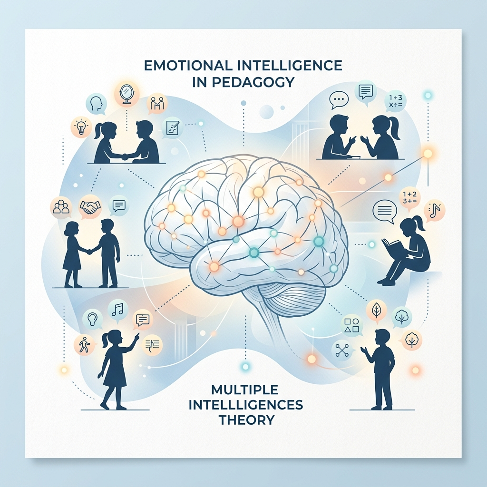
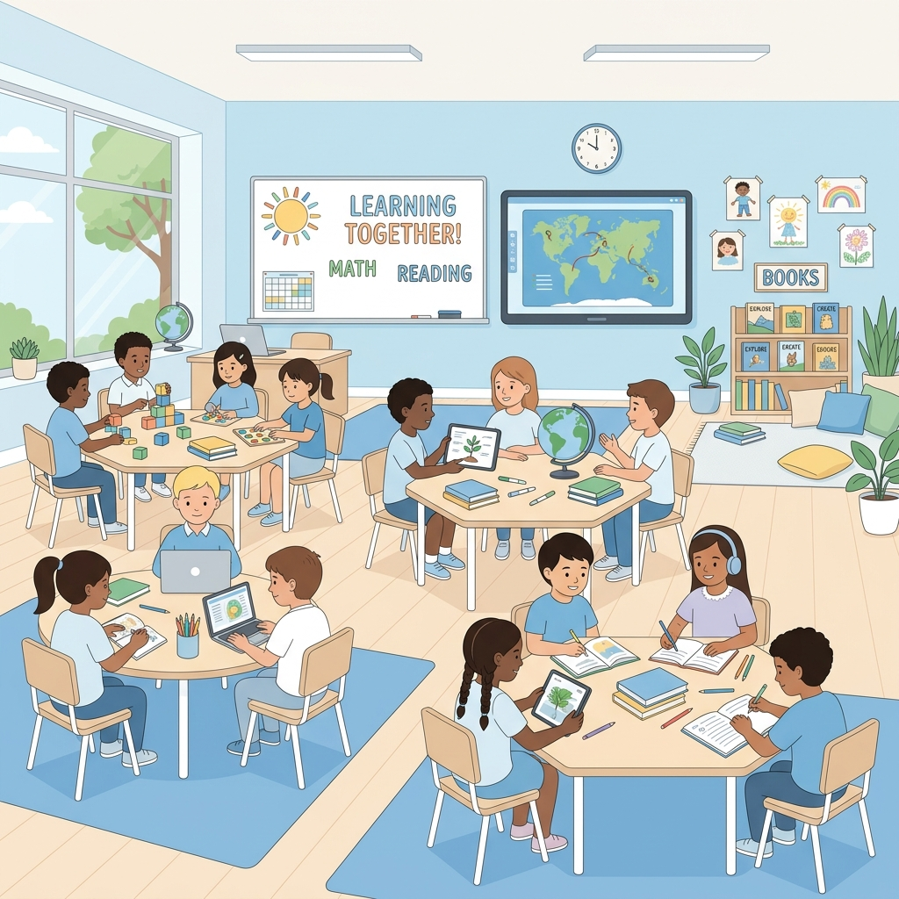

Educator · Researcher · Author
Bridging Emotional Intelligence and innovative pedagogy to redefine what it means to be a student.
"You cannot find lazy students, but you can find a student who was forced to study something they hate."
— Ahmed-Reda Salimi, Research Thesis 2026
I am a student-teacher and researcher at the Higher Normal School (ENS), University of Hassan II, Casablanca, specializing in Primary Education with a focus on Languages and Science.
My academic mission centers on a bold proposition: the so-called "lazy student" does not exist. Through my thesis research, I investigate how Emotional Intelligence (EI) and Multiple Intelligences theory can be harnessed to transform disengaged learners into intrinsically motivated ones.
With hands-on classroom experience across three schools — from public primary classes of 40 students to private middle schools using fully digital instruction — I translate research into real-world pedagogical practice every day.
A record of education, classroom experience, and continuous professional development.
University of Hassan II Casablanca, Morocco
Higher Normal School (ENS) Casablanca, Morocco
University of Hassan II Casablanca
"Academic Success Between Emotional Intelligence and Educational Guidance Based on Multiple Intelligences: A Pedagogical Approach to Refuting the Concept of the 'Lazy Student'"
Ibrahim El Roudani Public School Primary Level Casablanca
Paul Robert Private School Middle School Level Casablanca
Sharaka Public School Primary Level Casablanca
Community Mosque & Education Center Casablanca
ALX Program – Mastery of Microsoft & Google Tools (2022)
Community Campaigns (2023)
Logical Thinking Instruction (2023)
Member since 2023
Member since 2024
Exploring the intersection of psychology, pedagogy, and practice.

My flagship research thesis investigates the intersection of Emotional Intelligence (EI) and Howard Gardner's Multiple Intelligences theory as a framework for understanding academic disengagement. The study proposes that student failure is not a trait but a symptom of misaligned educational guidance, introducing concrete pedagogical tools to bridge the gap between student potential and performance.

A field-based pedagogical study examining how the quality of primary education — particularly in foundational literacy, numeracy, and emotional development — directly impacts student performance in secondary school. Conducted across both public and private school settings in Casablanca, this research proposes bridging strategies to reduce learning gaps during the critical school transition phase.
An applied classroom research project documenting the design and implementation of individualized inclusion strategies for a student with Down Syndrome. The project resulted in a 70/100 academic and social integration rate, creating a replicable model for inclusive pedagogy in public Moroccan primary schools. Strategies drew on occupational therapy frameworks, kinesthetic learning, and peer-mediated instruction.
A showcase of work produced as a student — videos, games, stories, and creative projects.
Add your student projects — videos, games, written stories, presentations, or any creative work produced during your studies.
Add your teaching projects here — videos, games, stories, and any materials you created as a teacher. Use the table below to organize them by subject and grade level.
Fill in the table cells below with the videos, games, stories, or materials you created for each subject and grade level.
| Grade Level | Mathematics |
French |
Arabic |
English |
Phys. Ed. |
Life Skills / Civics |
science & technology |
|---|---|---|---|---|---|---|---|
| Grade 1 | View Projects | View Projects | View Projects | View Projects | View Projects | View Projects | View Projects |
| Grade 2 | View Projects | View Projects | View Projects | View Projects | View Projects | View Projects | View Projects |
| Grade 3 | View Projects | View Projects | View Projects | View Projects | View Projects | View Projects | View Projects |
| Grade 4 | View Projects | View Projects | View Projects | View Projects | View Projects | View Projects | View Projects |
| Grade 5 | View Projects | View Projects | View Projects | View Projects | View Projects | View Projects | View Projects |
| Grade 6 | View Projects | View Projects | View Projects | View Projects | View Projects | View Projects | View Projects |
A mind that teaches also creates. Here are my published and in-progress works.
A philosophical and introspective exploration of perception, choice, and the human tendency to construct alternate realities as a response to hardship.
A thought-provoking work drawing on Quranic inquiry as a framework for critical thinking and intellectual awakening, intended for Arabic-speaking readers.
Ahmed-Reda's debut English-language novel — a literary fiction narrative exploring themes of spiritual renewal, identity, and transformation through a modern protagonist's journey.